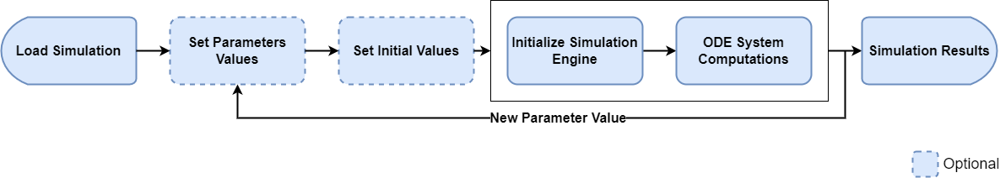
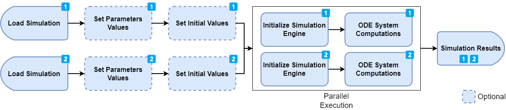
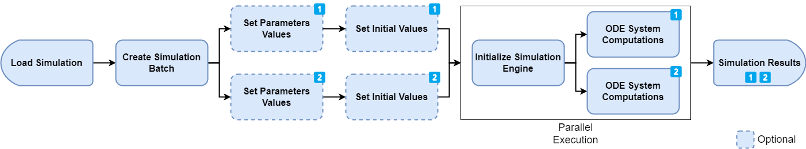

There are a few ways to run simulations using this package. The easiest way is, as expected, not necessarily the most efficient one. So depending on the use case, a different approach than what is outlined in Run Simulations might be more suited.
This vignette aims at describing some scenarios and the suggested methods to efficiently run simulations.
Life cycle of a simulation run
In general, a user loads a simulation, updates some parameter values, calculates the simulation and retrieves the results. Here are some steps inherent to each simulation:
- Loading a simulation
- Optional: Setting parameter values
- Optional: Setting initial values
- Initializing the simulation engine
- Solving the ODE System (calculating the outputs)
Depending on the simulation of interest, some steps might take much longer than others. For example, a simulation with multiple administrations simulated over many months will load and initialize quickly (1 and 4) while calculating (5) will be the critical step. On the other hand, a simulation with dozens of compounds will also take time to load and initialize (1 and 4).
Running a single simulation once
This is by far the easiest use cases. A simulation is loaded from a .pkml file and the outputs are calculated. In this use case, step 4 and 5 are automatically lumped together in one single call (See Run Simulations for more details).

Running a single simulation multiple times and varying some parameters/initial values between each run
This is already a use case where the optimal and most efficient way depends drastically on the simulation at hand. Let’s assume that we want to calculate the outputs of a simulation for different doses.
A simple implementation could follow the following idea, where a simulation is loaded once, the dose value is updated and the simulation is calculated for each dose of interest.

library(ospsuite)
#> Loading required package: rClr
#> Loading the dynamic library for Microsoft .NET runtime...
#> Loaded Common Language Runtime version 4.0.30319.42000
# Load and run the simulation
simFilePath <- system.file("extdata", "Aciclovir.pkml", package = "ospsuite")
sim <- loadSimulation(simFilePath)
doseParameter <- getAllParametersMatching(toPathString("Applications", "**", "Dose"), sim)[[1]]
# run for dose 100mg
doseParameter$value <- toBaseUnit(doseParameter, 100, "mg")
result100 <- runSimulations(simulations = sim)
# run for dose 200mg
doseParameter$value <- toBaseUnit(doseParameter, 200, "mg")
result200 <- runSimulations(simulations = sim)
# ...
# run for dose 500mg
doseParameter$value <- toBaseUnit(doseParameter, 500, "mg")
result500 <- runSimulations(simulations = sim)This implementation is fairly easy to understand, but has potentially
one big performance bottleneck. Each simulation run is performed
sequentially (i.e. one at a time). That means that
there will not be any performance boost from having multiple cores on
the machine. If the simulation only takes a few seconds to run, this
solution is absolutely acceptable. However, if we assume that a
simulation takes 1h to run, this code would take over 5h to complete, as
each runSimulations call would be executed
sequentially.
When the simulation run time (5) is much greater than the loading (1) and initialization time (4), a better approach is to load the simulation multiple times and run the simulation concurrently (i.e. in parallel).

Consider the following implementation:
library(ospsuite)
# Load and run the simulation
simFilePath <- system.file("extdata", "Aciclovir.pkml", package = "ospsuite")
loadSimulationWithDose <- function(doseInMg) {
sim <- loadSimulation(simFilePath, loadFromCache = FALSE)
doseParameter <- getAllParametersMatching(toPathString("Applications", "**", "Dose"), sim)[[1]]
doseParameter$value <- toBaseUnit(doseParameter, doseInMg, "mg")
return(sim)
}
# Creates 5 instances of a simulation (This is very fast for typical simulations)
sim100 <- loadSimulationWithDose(doseInMg = 100)
sim200 <- loadSimulationWithDose(doseInMg = 200)
sim300 <- loadSimulationWithDose(doseInMg = 300)
sim400 <- loadSimulationWithDose(doseInMg = 400)
sim500 <- loadSimulationWithDose(doseInMg = 500)
# Runs the simulation in parallel
results <- runSimulations(simulations = list(sim100, sim200, sim300, sim400, sim500))
# Results in now a list of SimulationResultsThis implementation is also fairly straight forward. We load the
simulation multiple times from the same file (note the usage of
loadFromCache = FALSE to ensure that we always get a new
instance of a simulation and not the same instance) and we set the dose.
Then, we call the runSimulations function with the list of
simulations. The engine will run these simulations in parallel, which
means that the overall execution time should be slightly more than 1h,
as each run would be executed at the same time.
Optimized loading for running simulations with predefined set of variable parameters
This is a more advanced use case, typically when implementing some kind of optimization or sensitivity algorithms. The ospsuite package introduces the concept of a simulation batch. With a simulation batch, the variable parameters (or initial values) of a simulation to vary between each run are specified explicitly during the creation of the simulation batch. This allows the simulation engine to speed up the system significantly as some equations can be rewritten and simplified. A simulation batch also keeps the simplified simulation in memory. That means that running a simulation again with a new set of values will be much faster, as the initialization phase (4) is only done if required and not for every run.

Consider the following implementation. We first create two simulation
batches for the same model and define the parameter values that can be
changed between runs. Note that, as opposed to the
Simulation object, we do not have access to any
parameter/species values nor can we change the outputs or simulation
time.
library(ospsuite)
simFilePath <- system.file("extdata", "Aciclovir.pkml", package = "ospsuite")
# We load the simulation for which the batches will be created
sim1 <- loadSimulation(simFilePath, loadFromCache = FALSE)
# define the list of parameter that will be varied between the runs.
# For the first batch, we will vary 2 parameters: Lipophilicity and Permeability
parameterPaths <- c("Aciclovir|Lipophilicity", "Aciclovir|Permeability")
# define a first simulation batch
simBatch1 <- createSimulationBatch(simulation = sim1, parametersOrPaths = parameterPaths)
# for the second batch, we will vary Molecular Weight
simBatch2 <- createSimulationBatch(
simulation = sim1,
parametersOrPaths = c("Aciclovir|Molecular weight")
)
simulationBatches <- list(simBatch1, simBatch2)In the next step, we define multiple runs of the simulation batch by adding different parameter (and/or species start) values set. Each set of values correspond to one run. The benefit of this approach is that the initialization steps (1 and 4) are only performed once. After that, only the execution time (step 5) will have an impact on the total performance.
# now setting some parameter run values (the size of the array should match
# the number of parameters to vary for each batch
simBatch1$addRunValues(parameterValues = c(1, 2))
#> [1] "800a0899-a3e3-4440-83a8-0b41cc1090f1"
simBatch1$addRunValues(parameterValues = c(3, 4))
#> [1] "3f10a632-e82a-4c1d-b73e-e0ca30c49916"
simBatch1$addRunValues(parameterValues = c(5, 6))
#> [1] "04bc4f93-8826-40ca-affc-be1751061bde"
# We only have one parameter to vary for simBatch2, therefore only one value to set
simBatch2$addRunValues(parameterValues = 150)
#> [1] "89c8c0b3-eb51-49c0-921b-66d07e3da51c"
simBatch2$addRunValues(parameterValues = 200)
#> [1] "c6dab22a-6a4d-4df6-87af-7ec9c673ec1e"
simBatch2$addRunValues(parameterValues = 300)
#> [1] "2f00121d-41e0-42da-9e26-137363b44cb3"
simBatch2$addRunValues(parameterValues = 400)
#> [1] "96920ed3-7708-4b41-b221-6da09126bb3c"So far, we created 2 simulation batches, one with 3 parameter sets and the other one with 4. That means that 3 runs will be enqueued for simBatch1 and 4 will be enqueued for simBatch2. Each run gets a unique id that can later be used to correctly assign simulation results to the simulated set of parameters.
# Now we run the simulation batches.
# By doing so, 7 runs (3 for simBatch1 and 4 for simBatch2) will be executed in parallel.
# Please see documentation of runSimulationBatches for more details.
# The resulting output is a named list, where the names are the ids of the enqueued runs.
results <- runSimulationBatches(simulationBatches)
print(names(unlist(results)))
#> [1] "ee3cbb6c-b75b-4d28-b60b-21a7223b307b.800a0899-a3e3-4440-83a8-0b41cc1090f1"
#> [2] "ee3cbb6c-b75b-4d28-b60b-21a7223b307b.3f10a632-e82a-4c1d-b73e-e0ca30c49916"
#> [3] "ee3cbb6c-b75b-4d28-b60b-21a7223b307b.04bc4f93-8826-40ca-affc-be1751061bde"
#> [4] "8891da2f-114c-461c-a4b8-0fa72c03a023.89c8c0b3-eb51-49c0-921b-66d07e3da51c"
#> [5] "8891da2f-114c-461c-a4b8-0fa72c03a023.c6dab22a-6a4d-4df6-87af-7ec9c673ec1e"
#> [6] "8891da2f-114c-461c-a4b8-0fa72c03a023.2f00121d-41e0-42da-9e26-137363b44cb3"
#> [7] "8891da2f-114c-461c-a4b8-0fa72c03a023.96920ed3-7708-4b41-b221-6da09126bb3c"The enqueued run values are cleared after calling
runSimulationBatches(), so executing the run again would
result in an empty results list. We can now set more values to the
batches and run them again. Notes: - We do not have to always set the
same number of values at the same time - Previous runValues
are automatically cleared when runSimulationBatches() is
called.
simBatch1$addRunValues(parameterValues = c(10, 20))
#> [1] "cdef7e2e-e6b3-4d46-a75a-a2dea3f9ea8b"
simBatch1$addRunValues(parameterValues = c(30, 40))
#> [1] "b50244f6-2ed3-4f10-8b51-9cf30f2937d1"
simBatch2$addRunValues(parameterValues = 500)
#> [1] "d0f3b705-5ebd-4538-95fc-f386e46f4a85"
simBatch2$addRunValues(parameterValues = 200)
#> [1] "57a85943-00d0-4d08-82e2-25509f90b2c9"
# this run will be much faster as the simulation won't be initialized again.
# Only the new value will be set as specified when adding new run values with addRunValues
results2 <- runSimulationBatches(simulationBatches)
# Once the simulation batches instances are not needed anymore, they can be removed
# from the environment and the allocated memory cleared.
# This will be done automatically when the R session is terminated.
rm(simBatch1)
rm(simBatch2)Usage of SimulationBatch is recommended for advanced
scenarios where simulations expected to be run hundreds of times and
where each second that can be spared will impact the performance
significantly.
Varying state variable parameters with SimulationBatch
State variable parameters, i.e., those defined by a right hand side (RHS), are treated as molecules internally. Trying to create and run a simulation batch with a state variable parameter set as a variable parameter will result in an error:
stateVariableParam <- getParameter(path = "Organism|Lumen|Stomach|Liquid", container = sim1)
print(stateVariableParam)
#> Parameter:
#> Path: Organism|Lumen|Stomach|Liquid
#> Value: 0.05 [l]
#> isFormula: TRUE
#> formula: V*SteadyStateFillLevel
#> Value overrides formula: FALSE
#> isStateVariable: TRUE
#> RHSFormula: NULL
#> isFormula: TRUE
#> formula: OralApplicationsEnabled ? -LT_sto + Inflow*FillLevelFlag : 0
# Create simulation batch with state variable parameter set as a variable parameter
simBatch <- createSimulationBatch(simulation = sim1, parametersOrPaths = stateVariableParam)
# Add run values
resId <- simBatch$addRunValues(parameterValues = 0.5)
# Try to run batch
results <- runSimulationBatches(simBatch)
#> Error in rClr::clrCall(simulationRunner, "RunConcurrently"): Type: OSPSuite.Core.Domain.InvalidArgumentException
#> Message: Entities 'Organism|Lumen|Stomach|Liquid' do not exist in the simulation
#> Method: Void validate(System.Collections.Generic.IReadOnlyList`1[System.String], System.Collections.Generic.IReadOnlyList`1[System.String])
#> Stack trace:
#> at OSPSuite.R.Domain.SimulationBatch.validate(IReadOnlyList`1 entitiesToVary, IReadOnlyList`1 entitiesThatWillBeVaried)
#> at OSPSuite.R.Domain.SimulationBatch.validate(SimulationBatchOptions simulationBatchOptions)
#> at OSPSuite.R.Domain.SimulationBatch.Initialize(IModelCoreSimulation simulation, SimulationBatchOptions simulationBatchOptions, SimulationRunOptions simulationRunOptions)
#> at OSPSuite.R.Domain.SimulationBatchFactory.Create(IModelCoreSimulation modelCoreSimulation, SimulationBatchOptions simulationBatchOptions, SimulationRunOptions simulationRunOptions)
#> at OSPSuite.R.Domain.ConcurrentRunSimulationBatch.AddNewBatch(SimulationRunOptions simulationRunOptions)
#> at OSPSuite.R.ServiInstead, the state variable parameter should be treated as a species and set as a variable molecule start value.
stateVariableParam <- getParameter(path = "Organism|Lumen|Stomach|Liquid", container = sim1)
# Create simulation batch with state variable parameter set as a variable molecule
simBatch <- createSimulationBatch(simulation = sim1, moleculesOrPaths = stateVariableParam)
# Add run values
resId <- simBatch$addRunValues(initialValues = 0.5)
# Try to run batch
results <- runSimulationBatches(simBatch)